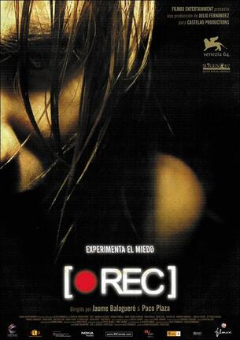

REC

Desplegar info
Cada noche, Ángela, una reportera de la TV local, sigue con su cámara a un grupo profesional distinto. hOY le tocan los bomberos y tiene la esperanza de asistir a un incendio. La noche transcurre tranquilamente. Y cuando, por fin, reciben la llamada de una anciana encerrada en su casa, no le queda otro remedio que seguirlos. En el edificio, los vecinos están muy asustados. La mujer, encerrada en su piso, lanza gritos desgarradores... Es el comienzo de una pesadilla y un dramático reportaje.
| Año | 2007 |
|---|---|
| Nacionalidad | España |
| Director | Jaume Balagueró |
| Actores principales | Manuela Velásco, Ferrán Terraza |